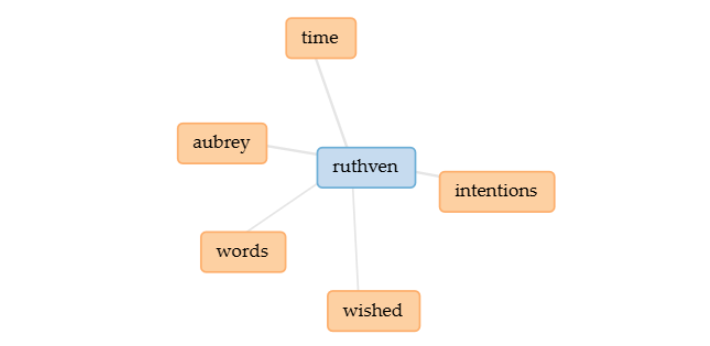
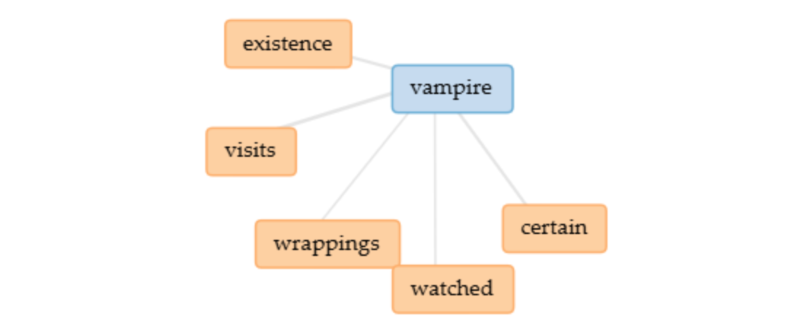
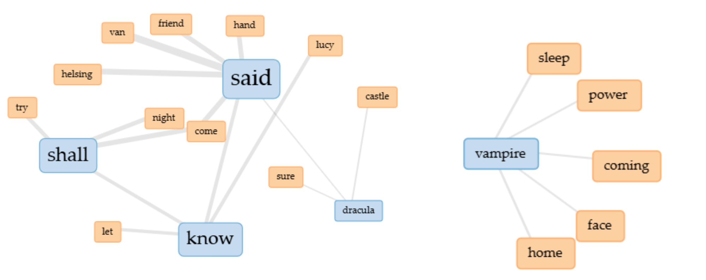

English Fictional Vampires Depicted in the 19th Century

The scope of this project will be narrowed down to three 19th century English texts that are well-known in vampiric literature: 1819 The Vampyre by John Polidori, 1872 Carmilla by Sheridan Le Fanu and 1897 Dracula by Bram Stoker. The goal of this project is to highlight what the depictions of vampires in English literature tell us about the era in which it was historically written in? The two tools that I'll be using for my analysis are Voyant Tools and Google My Maps.
Text Summaries

The Vampyre is a novella written by John William Polidori in 1819, it’s widely considered to be the first vampire story in English literature–thus creating a foundation for the vampire archetype. The story follows Aubrey, an wealthy orphan, who travels with Lord Ruthven, a nobleman that Aubrey later learns is a vampire, throughout Europe. Key themes such as seduction, supernatural, and corruption are present within the text.
Carmilla is a novella written by Joseph Sheridan Le Fanu in 1872, it’s considered to be another foundation for English vampire literature. The story is narrated by the main protagonist Laura who desperately befriends Carmilla after finding her in a carriage, because of her desire for companionship. Throughout the novella key themes of isolation, sexuality, and the supernatural.
Dracula is an epistolary novel written by Bram Stoker in 1897, one of most well-known English vampire literature. The story is told through a series of documents–the primary form being letters. Ultimately, Count Dracula, the vampire and antagonist of the story, wants to spread vampirism throughout Europe, while other characters such as Jonathan and Abraham fight against his invasion. The novel contains key themes of sexuality, supernatural, religion, and invasion.
Fictional Journeys
Individual Routes
The Vampyre takes place in four locations: London, Rome, Greece, and Athens, Greece. Each location provides an unique setting, with London being presented as this elite and sophisticated society, portraying how Aubrey is putting Lord Ruthven on this pedestal or high expectation because he’s curious about this mysterious nobleman. Rome, being portrayed as a sophisticated and cultural spot with corruption, highlighting the sinister character that is Lord Ruthven. Greece, being a stark difference from the other two with being rural and mountainous, allowing that supernatural mood into the story. Ianthe brings that humbleness, contrasting with the flaunting of wealth from earlier, and providing folklore. Athens, Greece, is where the truth is out in the open. Ruthven is revealed to be a vampire after drying and making Aubrey swear to not tell anyone for a year and one day. The isolation of the mountains makes it eerie, as if Aubrey is truly alone with this evil and unable to stop Ruthven.
Carmilla is static, with the majority of the story taking place in Styria, Austria. Laura lives in a huge castle with her father and servants, an attempt for the author to display what type of character Laura is–one of wealth. However, this castle is isolated, being away from other villages. Acknowledged that, when Carmilla arrived at the castle due to the carriage accident, Carmilla was easily able to trap Laura in an emotional relationship because of Laura's isolation and desperation to have friends her age. However, the presence of Carmilla has Laura undergo a mysterious illness, prompting Laura’s father to take her to Vienna to seek advance medicine that isn’t offered in their rural location. Another location, however was unable to be marked onto the map because it’s fictional, is the ruined village where the Karnstein resting place is located. There, Carmilla’s (or Millarca, they are the same person) hidden tomb was found by Baron Vordenburg, who has a history of defeating vampires, and exhumes her body.
Dracula, on the other hand, takes place in many locations. However, for the sake of this project, I narrowed it down to seven major locations based on Count Dracula’s movement. The first is Transylvania, the starting point and resting point. The Carpathian Mountains is Dracula’s escape, him leaving his confinement and safe point. Bistrita, where he preys on the locals, which can be interpreted as a preview of what he plans to do in London. Next Varna, where he was sunk into a Russian ship named Demeter in his coffin filled with Transylvania solid. The ship crashes into Whitby during a ship, and Dracula starts his invasion of England by preying on the locals and moving in secret. He then relocates to London, where he manipulates women like Lucy and Mina, creating an army. He created a man based in Purfleet in his private estate Carfax Abbey, however had to escape because Helsing’s group was onto him. The story makes him go through a reversal journey, where he ultimately ends up in Transylvania and is defeated by Jonathan and Quincey.
Analysis
The theme that the two texts, The Vampyre and Dracula share is that vampires–or rather what the vampire represents– isn’t confined to one area. Ruthven travels around Europe to seduce women and drain their blood right after. Dracula escaped from his confined castle in Transylvania and sunk into England in order to grow his power. In contrast, the setting of Carmilla is fixed, However, that doesn’t take away from its horror element. With Carmilla preying on women around Laura’s age, she brings the ‘evil’ to them. Now when I say ‘evil’ it could mean a number of things. As quoted in the text Fear Then and Now: The Vampire as a Reflection of Society, “This creature [vampires], like many others, can be witnessed as an embodiment of the divergent thoughts concerning gender, sexuality, race, class, and ethnicity” (Phelps 2).
Text Analysis
The Vampyre

I looked up ‘Ruthven’ and used the ‘link’ tool to see which words are often associated with his name. ‘Intentions’ is the word I am going to use to zoom in on, since it is a significant fact in the story. When Aubrey first encountered Ruthven, he was unaware of his intentions, thus believing he was some mysterious man that he wanted to know more about. However, once he realized Ruthven’s attentions his perspective switched, and that also shifted the mood of the novella. This mysterious nobleman is a predator preying upon young women. The Vampyre Corpus Link
Cramilla

I looked up ‘vampire’ instead of ‘Carmilla’ because nothing noteworthy was there for me to make an analysis of. However, if ‘vampire’, the word ‘visits’ caught my attention because of the context of the novella. Carmilla would prey upon these girls, for example Laura, by visiting them. From there they would undergo a mysterious illness. Carmilla Corpus Link
Darcula

I looked up ‘Dracula’ and ‘vampire’ and used the ‘link’ tool to see which words are often associated with those words. Admittedly, there wasn’t anything interesting when I looked up Dracule’s name alone except for the word ‘castle’. It caught my attention because of how the author presents Dracula’s castle in Transylvania as this isolated location–like another realm. It supports the idea that Dracula was ultimately confined in his castle, despite it being his place of origin. Now, when looking up ‘vampire’ one word stuck out to me: ‘coming’. The story revolved around Dracula traveling to Europe in order to invade it and spread his influence. Such a common word with that content becomes eerie–a supernatural being coming after humans. Dracula Corpus Link
Reflection
Based on the three English texts from the 19th century, the fictional vampire is ultimately an image or representation of humans at that era. For The Vampyre, the theme of the elite being corrupted, in context Ruthven using his elite status to travel around Europe in order to fulfill his intentions, can be interpreted as English societies fears of corrupted aristocrats–for their society valued the reputation and class image. We can also think of it as a fear of temptation, Aubrey who is deemed as innocent in the novella is drawn to Ruthven.
When we look into Dracula, the theme of colonization is very present in the novel. As quoted in the text "Vampiric Reading": Dracula and Readerly Desire, ‘While scholars have occasionally noticed Dracula’s role as a reader, they have mostly argued that this scene is a metaphor for something else. Stephen D. Arata claims that this scene represents Dracula’s impending ‘colonization’ of England through the knowledge he acquires by reading—that is, in Arata’s own words, ‘reverse colonization’ (623).” (Jo 288). One could make the parallels between British colonization and Dracula’s journey, with Dracula traveling by ship and invading England by manipulating those around him. “Dracula belongs to the imaginary regime of superstition rather than to that of religion and ethical consciousness, to repeat, because the transmission of the moral pollution of vampirism in Stoker’s fable is purely a mechanical process…” (Herbert 104). In other words, Dracula is spreading fear through vampirism.
The theme of sexuality is quite present in Carmilla, especially in the scene where Laura expresses a discomfort in how Carmilla treats her because it makes her confused. Sexuality, to be more specific that of the same gender, was considered dangerous and taboo.
Essentially, Vampires are humans' fears at the time.
Bibliography
Herbert, Christopher. “Vampire Religion.” Representations, vol. 79, no. 1, 2002, pp. 100–21. JSTOR, https://doi.org/10.1525/rep.2002.79.1.100. Accessed 7 May 2026.
JO, SUNGGYUNG. “‘Vampiric Reading’: Dracula and Readerly Desire.” Texas Studies in Literature and Language, vol. 61, no. 3, 2019, pp. 225–43. JSTOR, https://www.jstor.org/stable/26778835. Accessed 8 May 2026.
Le Fanu, Sheridan. Carmilla. 1872.
Phelps, Mackenzie K. Fear Then and Now: The Vampire as a Reflection of Society. Chapman University, 2021.
Polidori, John. The Vampyre. 1819. Dover Publications, 1965.
Stoker, Bram. Dracula. 1897. Edited by Nina Auerbach and David J. Skal, W. W. Norton & Company, 1997.
← Back to Projects